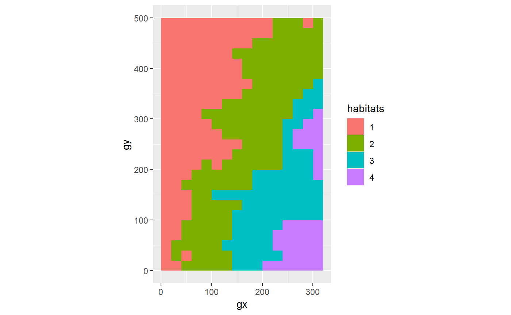

Analyze forest diversity and dynamics
Analyze forest diversity and dynamicsfgeo provides functions to manipulate and visualize ForestGEO datasets, and to analyze the abundance, demography, and habitats of forest trees.
- Search functions and datasets
- Related projects
- Try fgeo online
- Ask questions, report bugs, or propose features
Installation
Expected R environment
- R version is recent
- All packages are updated (run
update.packages()) - No other R session is running
- Current R session is clean (click Session > Restart R)
Option 1: Install directly
(If you reach GitHub’s rate limit see usethis::browse_github_pat()).
Option 2: Install via fgeo.install
install.packages("devtools")
devtools::install_github("forestgeo/fgeo.install")
# If needed, installs dependencies from CRAN and fgeo packages from GitHub
fgeo.install::install_fgeo()- To upgrade packages see
?devtools::update_packages() - To remove packages see
?remove.packages()
Tips to avoid or fix common installation problems
Instruct RStudio not to preserve your workspace between sessions
In RStudio go to Tools > Global Options…


Restart R many times each day
Press Cmd/Ctrl + Shift + F10 to restart RStudio or go to Session > Restart R.
Increase the rate limit to install from GitHub
- Ensure you have an account on GitHub (https://github.com/).
- Generate a GitHub token named exactly
GITHUB_PATby runningusethis::browse_github_pat()in R. - You will be sent to GitHub and you should see something like this:

…
- Make sure your token description says exactly
GITHUB_PATand click Generate token
…

- Store your new token in the environmental variable
GITHUB_PATby runningusethis::edit_r_environ()in R. - A file called .Renviron will open. Type the name and value of your GitHub token. Ensure to end this file with a new empty line. Your .Renviron file should now look like this:

…
- Save and close .Renviron.
Install package development utilities
Sometimes you may want to install the source version of an R package from CRAN or GitHub. If that package contains a src/ folder you will need to install package development utilities.
Troubleshoot: error: X11 library is missing: install XQuartz …
If you are a mac user, fgeo may fail to install with the error below. Install XQuartz from https://www.xquartz.org/ and try to install fgeo again.
Example
Load all fgeo packages in one step.
library(fgeo)
#> -- Attaching packages ------------------------------------------------------- fgeo 0.0.0.9002 --
#> v fgeo.analyze 0.0.0.9003 v fgeo.tool 0.0.0.9005
#> v fgeo.plot 0.0.0.9402 v fgeo.x 0.0.0.9000
#> -- Conflicts --------------------------------------------------------------- fgeo_conflicts() --
#> x fgeo.tool::filter() masks stats::filter()Explore
On an interactive session, fgeo_help() and fgeo_browse_reference() help you to search documentation.
Datasets
fgeo includes multiple small datasets. For example:
tree5
#> # A tibble: 30 x 19
#> treeID stemID tag StemTag sp quadrat gx gy MeasureID CensusID
#> <int> <int> <chr> <chr> <chr> <chr> <dbl> <dbl> <int> <int>
#> 1 7624 160987 1089~ 175325 TRIP~ 722 139. 425. 486675 5
#> 2 8055 10036 1094~ 109482 CECS~ 522 94.8 424. 468874 5
#> 3 19930 117849 1234~ 165576 CASA~ 425 61.3 496. 471979 5
#> 4 23746 29677 14473 14473 PREM~ 617 100. 328. 442571 5
#> 5 31702 39793 22889 22889 SLOB~ 304 53.8 73.8 447307 5
#> 6 35355 44026 27538 27538 SLOB~ 1106 203. 110. 449169 5
#> 7 35891 44634 282 282 DACE~ 901 172. 14.7 434266 5
#> 8 39705 48888 33371 33370 CASS~ 1010 184. 194. 451067 5
#> 9 50184 60798 5830 5830 MATD~ 1007 191. 132. 437645 5
#> 10 57380 155867 66962 171649 SLOB~ 1414 274. 279. 459427 5
#> # ... with 20 more rows, and 9 more variables: dbh <dbl>, pom <chr>,
#> # hom <dbl>, ExactDate <date>, DFstatus <chr>, codes <chr>,
#> # nostems <dbl>, status <chr>, date <dbl>Some larger datasets are not stored locally but can be downloaded.
stem6 <- download_data("luquillo_stem6_random")
stem6
#> # A tibble: 1,320 x 19
#> treeID stemID tag StemTag sp quadrat gx gy MeasureID CensusID
#> <int> <int> <chr> <chr> <chr> <chr> <dbl> <dbl> <int> <int>
#> 1 104 143 10009 10009 DACE~ 113 10.3 245. 582850 6
#> 2 119 158 1001~ 100104 MYRS~ 1021 183. 410. 578696 6
#> 3 180 222 1001~ 100095 CASA~ 921 165. 410. NA NA
#> 4 180 223 1001~ 100096 CASA~ 921 165. 410. NA NA
#> 5 180 224 1001~ 100171 CASA~ 921 165. 410. 617046 6
#> 6 180 225 1001~ 100174 CASA~ 921 165. 410. 617049 6
#> 7 602 736 1006~ 100649 GUAG~ 821 149. 414. 614253 6
#> 8 631 775 10069 10069 PREM~ 213 38.3 245. 598429 6
#> 9 647 793 1007~ 100708 SCHM~ 821 143. 411. 614211 6
#> 10 1086 1339 10122 10122 DRYG~ 413 68.9 253. 603131 6
#> # ... with 1,310 more rows, and 9 more variables: dbh <dbl>, pom <chr>,
#> # hom <dbl>, ExactDate <date>, DFstatus <chr>, codes <chr>,
#> # countPOM <dbl>, status <chr>, date <dbl>For simplicity, let’s focus on a few species.
few_species <- c("PREMON", "CASARB")
census <- filter(stem6, sp %in% few_species)
census
#> # A tibble: 433 x 19
#> treeID stemID tag StemTag sp quadrat gx gy MeasureID CensusID
#> <int> <int> <chr> <chr> <chr> <chr> <dbl> <dbl> <int> <int>
#> 1 180 222 1001~ 100095 CASA~ 921 165. 410. NA NA
#> 2 180 223 1001~ 100096 CASA~ 921 165. 410. NA NA
#> 3 180 224 1001~ 100171 CASA~ 921 165. 410. 617046 6
#> 4 180 225 1001~ 100174 CASA~ 921 165. 410. 617049 6
#> 5 631 775 10069 10069 PREM~ 213 38.3 245. 598429 6
#> 6 1380 1702 1015~ 101560 CASA~ 820 142. 386. 614023 6
#> 7 1840 2240 10208 10208 PREM~ 613 116. 245. 607825 6
#> 8 2849 3421 1031~ 103156 CASA~ 420 79.2 389. 603814 6
#> 9 3354 4054 1037~ 103756 CASA~ 220 32.0 385. 599273 6
#> 10 3354 4055 1037~ 103757 CASA~ 220 32.0 385. NA NA
#> # ... with 423 more rows, and 9 more variables: dbh <dbl>, pom <chr>,
#> # hom <dbl>, ExactDate <date>, DFstatus <chr>, codes <chr>,
#> # countPOM <dbl>, status <chr>, date <dbl>Analyze
fgeo includes some common analyses:
- Abundance and basal area
abundance(census)
#> Warning: `treeid`: Duplicated values were detected. Do you need to pick
#> main stems?
#> # A tibble: 1 x 1
#> n
#> <int>
#> 1 433
abundance(
pick_main_stem(census)
)
#> # A tibble: 1 x 1
#> n
#> <int>
#> 1 346
by_species <- group_by(census, sp)
basal_area(by_species)
#> # A tibble: 2 x 2
#> # Groups: sp [2]
#> sp basal_area
#> <chr> <dbl>
#> 1 CASARB 535153.
#> 2 PREMON 3892799.- Demography
# `tree5` and `tree6` come with fgeo
to_df(
recruitment_ctfs(tree5, tree6)
)
#> Detected dbh ranges:
#> * `census1` = 10.9-323.
#> * `census2` = 10.5-347.
#> Using dbh `mindbh = 0` and above.
#> # A tibble: 1 x 8
#> N2 R rate lower upper time date1 date2
#> <dbl> <dbl> <dbl> <dbl> <dbl> <dbl> <dbl> <dbl>
#> 1 29 3 0.0241 0.00846 0.0681 4.53 18938. 20601.- Species-habitats association
# `elevation` comes with fgeo
habitats <- fgeo_habitat(elevation, gridsize = 20, n = 4)
autoplot(habitats)
# This analysis makes sense only for tree tables
tree <- download_data("luquillo_tree5_random")
to_df(
tt_test(tree, habitats)
)
#> Using `plotdim = c(320, 500)`. To change this value see `?tt_test()`.
#> Using `gridsize = 20`. To change this value see `?tt_test()`.
#> # A tibble: 292 x 8
#> habitat sp N.Hab Gr.Hab Ls.Hab Eq.Hab Rep.Agg.Neut Obs.Quantile
#> * <chr> <chr> <dbl> <dbl> <dbl> <dbl> <dbl> <dbl>
#> 1 1 ALCFLO 2 1443 153 4 0 0.902
#> 2 2 ALCFLO 1 807 778 15 0 0.504
#> 3 3 ALCFLO 0 0 715 885 -1 0
#> 4 4 ALCFLO 0 0 402 1198 -1 0
#> 5 1 ALCLAT 0 0 544 1056 -1 0
#> 6 2 ALCLAT 1 1432 156 12 0 0.895
#> 7 3 ALCLAT 0 0 324 1276 -1 0
#> 8 4 ALCLAT 0 0 144 1456 -1 0
#> 9 1 ANDINE 1 1117 466 17 0 0.698
#> 10 2 ANDINE 1 1081 510 9 0 0.676
#> # ... with 282 more rowsR code from recent publications by ForestGEO partners
Data have been made available as required by the journal to enable reproduction of the results presented in the paper. Please do not share these data without permission of the ForestGEO plot Principal Investigators (PIs). If you wish to publish papers based on these data, you are also required to get permission from the PIs of the corresponding ForestGEO plots.
- Soil drivers of local-scale tree growth in a lowland tropical forest (Zemunik et al., 2018).
-
Plant diversity increases with the strength of negative density dependence at the global scale (LaManna et al., 2018)
- Response #1: LaManna et al. 2018. Response to Comment on “Plant diversity increases with the strength of negative density dependence at the global scale” Science Vol. 360, Issue 6391, eaar3824. DOI: 10.1126/science.aar3824
- Response #2: LaManna et al. 2018. Response to Comment on “Plant diversity increases with the strength of negative density dependence at the global scale”. Science Vol. 360, Issue 6391, eaar5245. DOI: 10.1126/science.aar5245
Acknowledgments
Thanks to all partners of ForestGEO for sharing their ideas and code. For feedback on fgeo, special thanks to Gabriel Arellano, Stuart Davies, Lauren Krizel, Sean McMahon, and Haley Overstreet. There are many other people that deserve special acknowledgment; I thank them in the documentation and home page of each individual package that make up the fgeo development.